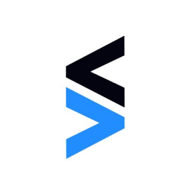
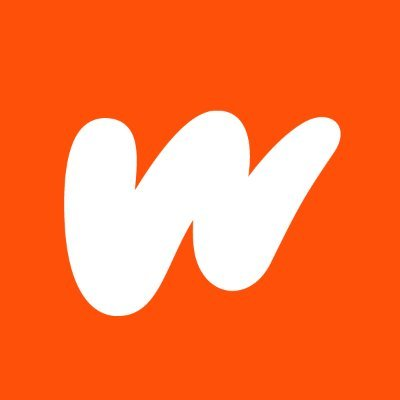
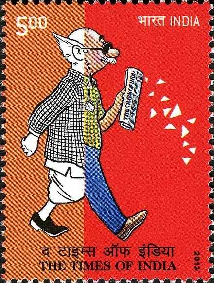

Airbnb opened a travel segment India did not have
From category education to host supply, India is now among Airbnb's fastest-growing markets globally
India is the fastest-scaling enterprise market on earth, and much of what it needs is already built, validated in the United States, working for American customers, and with no credible route into the country. Times Bridge US is that route: capital on the cap table, access to the rooms where Indian decisions are made, and people on the ground who turn interest into deployment.
The India opportunityTimes Bridge US
Times Bridge US is the investment and partnership arm of The Times of India Group in the United States. We find validated products in the American market, inside accelerators, private equity and venture portfolios, university spin-outs and corporate venture arms, and we carry them into India as investor, channel and operating partner. One relationship, instead of an India entity, a hiring plan and three lost years.
Why now
Indian enterprises have moved from asking what AI and modern software could do to paying for what they do. Contract sizes, capability-centre budgets and developer density are all inflecting at the same time.
Sources: Fortune Business Insights; SenseAI 2026; IBEF and EY GCC outlook; GitHub Octoverse 2025. Forecasts vary by scope and definition.
The gap
Two large populations sit on either side of the same opportunity, and almost nothing formal connects them. Discovery happens by chance, diligence is nobody's job, and trust has to be built from zero every single time.
In the United States
Working companies inside accelerators, private equity and venture portfolios, university spin-outs and corporate venture arms. They have product, proof and capital. What they lack is a credible, branded India channel, and almost none of them have one.
Today, India entry happens by chance rather than by design: a warm introduction, a conference conversation, a first customer who happened to call.
In India
Conglomerates, banks, retailers, manufacturers, hospital networks and capability centres with real, budgeted problems, many of which have already been solved elsewhere. They cannot easily find those solutions, and cannot easily evaluate a vendor with no local presence.
The buyer is not sceptical about the technology. The buyer is sceptical about the counterparty.
How the bridge works
01
We hunt cohort by cohort and portfolio by portfolio for post-product companies ready for their first scaled international channel, and we diligence them ourselves before we bring them to an Indian buyer. Our name is on the introduction.
02
We problem-map Indian enterprises before we pitch: known buyer, known budget, known timeline. Partners do not arrive to a list of logos and a cold start. They arrive to conversations that already have a reason to happen.
03
Deal structuring, market entry, local delivery and India go-to-market, orchestrated from day one. We invest alongside our partners, tie our upside to the India revenue we help create, and stay accountable after the contract is signed.
STEP 01
We map the Indian enterprises that fit the product, and the specific problem it would be bought to solve.
STEP 02
We open the conversation at the level where budgets are decided, on the strength of a name India has trusted since 1838.
STEP 03
We put the product to work inside the customer's own environment, handle integration and local requirements, and instrument the result.
STEP 04
We structure the contract, expand across the account, and run the India channel as a recurring line of business.
Why Times Bridge
Editorial trust accumulated since 1838 converts, in seconds, into commercial trust, on both sides of the bridge. It is the shortest path to a serious first meeting in India.
We are already on the ground where the companies are built, in the market where the products are proven. Origination does not need a new entity; it needs focus.
The Times of India Group reaches the country's leadership every morning and its digital audiences every hour. Distribution is the moat, and it makes origination almost free.
We can take real positions in the companies we bridge rather than simply introduce them. Investor and channel in one counterparty is a combination very few can offer.
Times Bridge has taken global companies from first India conversation to market leadership across travel, learning, mobility, wellbeing, media and developer software. The corridor is not a thesis we are testing. It is a route we have run.


From category education to host supply, India is now among Airbnb's fastest-growing markets globally
Institutional relationships and local credibility made India Coursera's second-largest market in the world
Market entry support, policy context and cultural fluency helped make India Uber's second-largest market

Courtesy: The Times of India
Every serious conversation in India starts with who is making the introduction. The Times of India Group has been part of the country's public life since 1838, publisher of the world's largest English-language newspaper, operator of India's largest digital business, and a fixture on the desk of the people who sign enterprise contracts.
That reach is what turns a cold, unknown foreign vendor into a partner worth an hour of a chief executive's time. We pair it with capital, diligence and delivery so that the meeting leads somewhere.